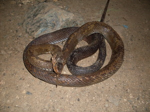
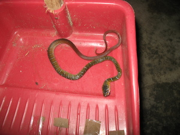

dumeraal  
/dumɔdaʔal/
Pron.: dumera:l
n.
a small, dark, and long kinds of snake with a red tail; venomous
Ka seini ne uled meilem se batek wey malabundus ne egpalahey tibus dè iya egpekeg-iling sikandan te dulepu piru meitem ka batek te dulepu wey malambened ne egweil-weil.
Nakakita a te uled ne dumeraal sika te sapiling ganna.
I've seen a snake in the yard a while ago.
Eng. snake variety
Tag. ahas
Ceb. bitin
OCM: Fauna (136)
DDP: Snake (1.6.1.3.1)
Online dict status: -
Usage level: R
Created: 06/may/2009
Updated by: QDL
Last updated: 13/Oct/2009
This page last updated: 19/May/2012
Copyright © 2009-2010, Matigsalug Language Christian Association, Inc